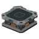

Map Table¶

The Map Table is a projection table that shows your party's map of the Overworld: everywhere any of you has been, the Hideout and everything on your compass. You can also place named waypoints on it, and everyone in the party gets them on their compass.At a glance
- Get it: an Uncommon blueprint from the Traveling Trader. After that, craft it at the Craftbot (30 s): 15 Metal Block, 3 Circuit Board, 2 Component Kit.
- Use on the table opens the map. Drag to move it, scroll to zoom.
- Click a square to place a waypoint. Click a waypoint to remove it. Up to 8 at a time, shared by the whole party.
- Each square is 64 m. North is up.
The map¶
The map shows the real ground of your world, drawn from the game's own terrain: grass, fields, sand, rock, lakes, roads and trees. It works on any seed. Ground you haven't explored yet stays dark.
The map is filled in as you explore. Every couple of seconds the game notes where each player is and marks that square and the ones around it as explored. Everyone in the party shares one map, so a friend's trip fills in your map too. It keeps track even before you own a Map Table, so the first one you build already shows where you've been.
| Square | Means |
|---|---|
| + (red) | This table |
| 1-8 (violet) | A waypoint |
| Compass icons | Everything on your compass (quests, contracts, beacons, the trader, your lost items), with the same pictures (beacons as a grey dot); hover for the name |
| H (gold) | The Hideout's Contract Board |
| Green | Explored |
| Dark | Not explored yet |
The window opens centred on the table. Hold the mouse button and drag to move the map, and use the mouse wheel to zoom in and out (the Zoom in / Zoom out buttons do the same). Zoomed right out, the squares are too small for letters, so markers show as plain coloured squares. Re-center brings the map back to the table. The top line says how much of the Overworld your party has explored.
Only the Overworld is mapped. A Map Table in another world, such as the Warehouse, still shows the Overworld map, without a "this table" square.
Waypoints¶
Click any square to drop a numbered waypoint there. Every player in the party gets a marker and a compass icon pointing at it, and a chat line says who placed it. The list on the right shows each waypoint's name and its distance and direction from the table (hover over it to see who placed it). Click a waypoint in the list to centre the map on it. Hover over a waypoint on the map to see its name.
To name a waypoint, press Rename next to it, type a name (up to 24 characters) and press Enter or Save. Everyone in the party sees the new name. Saving an empty name puts it back to Waypoint 1, Waypoint 2 and so on.
Click a waypoint again to remove it. Anyone can remove any waypoint. When all 8 are in use, remove one before placing another.
Managing your compass¶
The Compass tab beside the map lists everything on your compass: quests, contracts, beacons, the Traveling Trader, your lost items and your waypoints, grouped by kind (Quests, Contracts, Waypoints, Beacons and so on). Each has a Shown / Hidden button, and each group has Hide all / Show all. Markers with the same name, such as the several markers of one quest, share one line:
- Hidden takes it off your compass. It stays on the Map Table, dimmed, so you can still find it.
- Shown puts it back.
This is your own compass only; other players choose for themselves. Your choices are saved with the world. Click a name in the list to find it on the map. Enemy markers during raids come and go too quickly to be listed.